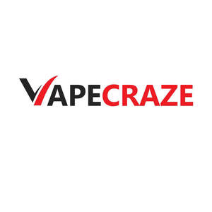

Trade Mark Journal No.2025/029 18 July 2025
UK00004232557 11 July 2025 (34)

- Class 34
- Electronic cigarettes; Liquid for electronic cigarettes; Electric cigarettes [electronic cigarettes]; Holders for electronic cigarettes; Flavourings for use in electronic cigarettes; Electronic cigars; Liquids for electronic cigarettes; Electronic cigarette boxes; Electronic cigarette cases; Cases for electronic cigarettes; Liquid solutions for use in electronic cigarettes; Flavorings, for use in electronic cigarettes; Cartridges for electronic cigarettes; Electronic cigarette cleaners; Smoking sets for electronic cigarettes; Electronic hookahs; Electronic cigarette atomizers; Electronic cigarette cartomizers; Personal vaporisers and electronic cigarettes, and flavourings and solutions therefor; Electronic cigarette liquid [e-liquid] comprised of flavourings in liquid form used to refill electronic cigarette cartridges; Liquid nicotine solutions for use in electronic cigarettes; Liquid nicotine solutions for electronic cigarettes; Electronic cigarettes for use as an alternative to traditional cigarettes; Electronic cigarette liquid [e-liquid] comprised of flavorings in liquid form used to refill electronic cigarette cartridges; Electronic smokers' pipes; Tobacco; Cigarette tobacco; Tobacco and tobacco substitutes; Smoking tobacco; Snus with tobacco; Smokeless tobacco; Mentholated tobacco; Hookah tobacco; Shisha tobacco; Hand-rolling tobacco; Roll-your-own tobacco; Menthol pipe tobacco; Chewing tobacco; Flavored tobacco; Snuff with tobacco; Flavourings for tobacco; Pipe tobacco; Leaf tobacco; Tobacco tar for use in electronic cigarettes; Tobacco spittoons; Tobacco tins; Tobacco products; Tobacco pipes; Pipes (Tobacco -); Pipes for smoking mentholated tobacco substitutes; Snus without tobacco; Tobacco powder; Tea for smoking as a tobacco substitute; Pouches for tobacco; Tobacco pouches; Pouches (Tobacco -); Tobacco and tobacco products (including substitutes); Tobacco jars; Manufactured tobacco; Humidifiers for tobacco; Tobacco substitutes; Cigars for use as an alternative to tobacco cigarettes; Japanese shredded tobacco (kizami tobacco); Tobacco cases; Raw tobacco; Tobacco filters; Rolling tobacco; Tobacco substitute; Articles for use with tobacco; Cigarettes containing tobacco substitutes; Menthol cigarettes; Spittoons for tobacco users; Tobacco containers and humidors; Tobacco pipe cleaners; Inhalers for use as an alternative to tobacco cigarettes; Herbal molasses [tobacco substitutes]; Hemp for smoking; Snuff without tobacco; Tobacco pipe scrapers; Tobacco free cigarettes, other than for medical purposes; Cigarettes; Tobacco storage tins; Filters for tobacco products; Tobacco free oral nicotine pouches [not for medical use]; Cigarettes, cigars, cigarillos and other ready-for-use smoking articles; Tobacco, whether manufactured or unmanufactured; Smokeless cigarette vaporizer pipes; Tobacco, raw or manufactured; Devices for extinguishing heated cigarettes, cigars and heated tobacco sticks; Tobacco products for the purpose of being heated; Asian long tobacco pipes (kiseru); Asian long tobacco pipes [kiseru]; Pipe cleaners for tobacco pipes; Absorbent paper for tobacco; Loose, rolling and pipe tobacco; Absorbent paper for tobacco pipes; Devices for extinguishing heated cigarettes and cigars as well as heated tobacco sticks; Cigarettes containing tobacco substitutes, not for medical purposes; Pipe racks for tobacco pipes; Asian long tobacco pipe sheaths; Herbs for smoking; Kiseru [long Japanese tobacco pipes]; Mouthpieces for cigarettes; Cigarette packets; Tobacco pipes of precious metal; Ashtrays for smokers; Devices for heating tobacco for the purpose of inhalation; Flavorings, other than essential oils, for tobacco substitutes; Snus; Smoking pipes; Lighters for smokers [cigarette lighters] [not for automobiles]; Smoking urns; Oral vaporizers for smokers; Cigarette lighters; Devices for heating tobacco substitutes for the purpose of inhalation; Tobacco pipes, not of precious metal; Electronic smoking pipes; Cigars; Lighters for smokers; Smokers (Lighters for -); Smoking pipe cleaners; Cigarette paper; Cigarette cases; Cases (Cigarette -); Cigarette cutters; Cigarette ash receptacles; Cigarette boxes; Cigarette papers; Tipping paper for cigarettes; Cigarette filters; Filters (Cigarette -); Refill cartridges for electronic cigarettes; Filter tips for cigarettes; Replaceable cartridges for electronic cigarettes; Cigarettes (Pocket machines for rolling -); Pocket machines for rolling cigarettes; Cigarette tips; Tips (Cigarette -); Cigar lighters; Cartridges sold filled with chemical flavorings in liquid form for electronic cigarettes.
KOMEN TRADES LTD